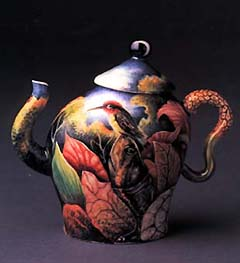
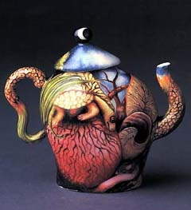

| Kurt Weiser
Contemporary American Studio Potter
Kurt
Weiser was born in 1950 in Lansing Michigan. He studied
ceramics under Ken Fergusen at the Kansas City Art Institute from
1972-76 and then completed an MFA at the University of Michigan.
In 1988, after a stint as Director of the Archie Bray Foundation
in Helena, MT, Weiser started teaching ceramics at Arizona State
University, where he has held the position of Regents' Professor
of Art since August 2000.
Weiser began his career making sculptural porcelain vessels, but
soon turned his attention to painting on porcelain. Weiser's allegorical
scenes, painted in a natural realism style on his distinctive vessel
forms have since then become easily recognizable works of a porcelain
painting master.

His
work has been acquired by many institutions around the world, including
the Victoria and Albert Museum in London, the Smithsonian Institution's
National Museum of American Art, the National Museum of History
in Taiwan, the Museum of Contemporary Ceramic Art and Institute
of Ceramics, Shigaraki, Japan, the Los Angeles County Art Museum,
the Carnegie Mellon University and others.
Kurt Weiser is represented by Garth
Clark Gallery, NY.
More Articles
More Artists of the Week
|